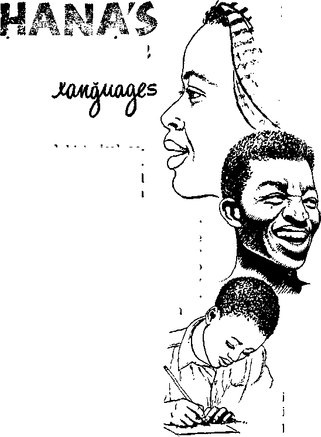
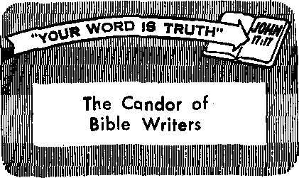

we You a Victim of Hero Worship?
would Medical Procedure Respect Conscience?
Take a Closer Look at Religious Art
Ghana’s Strange Mixture of Languages
SEPTEMBER 22, 1959
THE MISSION OF THIS JOURNAL
News sources that are able to keep you awake to the vital issues of our times must be unfettered by censorship and selfish interests. "Awake!" has no fetters. It recognizes facts, faces facts, is free to publish facts. It Is not bound by political ambitions or obligations; if is unhampered by advertisers whose toes must not be trodden on; it is unprejudiced by traditional creeds. This journal keeps itself free that it may speak freely to you. But it does not abuse its freedom. It maintains integrity to truth.
“Awake!" uses the regular news channels, but is not dependent on them. Its own correspondents are on ail continents, in scores of nations. From the four corners of the earth their uncensored, on-the-scenes reports come to you through these columns. This journal's viewpoint is not narrow, but is international. It is read in many nations, in many languages, by persons of all ages. Through its pages many fields of knowledge pass in review—government, commerce, religion, history, geography, science, social conditions, natural wonders—why, its coverage is os broad as the earth and as high as the heavens.
“Awake!” pledges itself to righteous principles, to exposing hidden foes and subtle dangers, to championing freedom for all, to comforting mourners and strengthening those disheartened by the failures of a delinquent world, reflecting sure hope for fhe establishment of a righteous New World.
Get acquainted with “Awake!” Keep awake by reading “Awake!"
PUBLJSJISD SliSULTANJSOUkLr IN THE UNJTKD StUTES BY TttE
WATCHTOWER BIBLE AND TRACT SOCIETY OF NEW YORK, INC.
117 Adams Street Brooklyn 1, N. Y., U. S. A.
and in Enoland iiv
WATCH TOWER BIBLE AND TRACT SOCIETY
WalcH Tower House, The Ridgeway London N.W. 7, England
N. H. Kuoae. President Grant Suitsr, Secretary
Printing this issue: 2.350,000 4d a copy
Aw At* I" k yitlliRBd In the folitwinl 19 languaies: R emittances fur subsci'lptinns BhrnUd be sent tn the offlee Sen IH ffl til II—Aft It a HUB, Danish, Dutch, UnflUh, Filtn- in your e.nuntry. OtltErwlae tend your remittance to lair, Strobls. Geman, Greek, Itausa. Ju^inese, Itaw- tsnutna. Ihticr st «(rf«ttoir te sent at least two imra ■lari, pcitusuese, Spanish, Swedish, Tacaltig. tiet.j'e subscription euiires
Monthly—CinyanK Indonesian, rt tn ininn, Zulu
Yearly Stibsci Iptfon rates fiAt semljncuthLy etilllona Amcrfca, H7 Ad&na #i., Brnfiklyn 1, N.Y Si AkImI I a, 11 Beresford Rd,, StrathtiehJ, N.S.W. 5/-CanadHt 150 Britigeland Are., Tcuuntn 19, (hit. tl England, Watch Tower HmjsR, Thfi Ridgeway, London N W. 7 7/-
CHANGES OF ADDRESS choild reach os thirty day* before your niMltip date. Give us your eld and new addroM t tf po» fete, yoir Qitf iddrm fafrri?. Watefr Tower, Watch Tower Home. The Hideaway, London N-W 7, England
New Zealand, 621 New North Rd., Auckland, S.W | 7/-Sggth Africa, Private Rage P.O. Elandsfont.pin, T*l. 7/-Monthly editioni cost half the above I'Ata,
Holered as wennd-clasi matter at UrcKiklyn. N.Y. J'rJnwd in England
The RIN* translation iced in "Awake!” |e the New Warld Tran Ration of the H&ly Scriftureu When ether traMlatlens are naed the following eymbois will appear Mhind the citations: - American Standard Version jjy - Cnholic Doiwy verston Jlcfo - J a tries Mcltatt'a version
AT - An American Translation -- The Kinphatlc DlagloiL J?O - ,L B. Rotherbam s vendmi
— AutftoriMd tersfun (MH? JP — Jewish Publlcatjon ;soe. JSS — Revised• ritcmdA.rd. Version
— J. 5. Darby.* jftskw — Imw lrespv'.« Y^' —
CONTENTS
Are You a Victim of Hero Worship? 5
Should Medical Procedure
What Is This Thing Called
“A Stampede Away from Responsibility” 15
Take a Closer Look at Religious Art 16
Ghana’s Strange Mixture of Languages
Gilead’s Thirty-third Class Graduates
Electronic “Eyes” for the Blind
“Your Word Is Truth”
themselves in their natural habitat are guilty of no such unwisdom in rearing their offspring. Thus although “the koala is one of the most inoffensive animals imaginable, doing no harm to anyone or anything,” and “a more amiably inclined creature would be hard to imagine,” a koala mother stands for no nonsense from her offspring. When baby koalas “are really naughty,” says a leading British zoqIo-gist, “the mother turns them over her knee and spanks them on their bottoms minutes on end with the flat of her hand,
WHEN is "kindness” not kindness?
When it is a mistaken kindness. Real kindness must be guided by wise principles. Thus the Creator, Jehovah God, not only ‘delights in loving-kindness,’ but is a wise and just God. His attributes are in perfect balance, and therefore his kindness truly is kindness. But not so man. Because of inherited imperfections we are prone to express kindness without always taking wisdom and justice into consideration. We confuse kindness with sentimentality. It is a mistaken kindness.
An Australian naturalist once wrote regarding the koala or “Teddy” bears, one of the cutest of all earth’s creatures: “Although when living in the bush they take no liquid, in captivity they quickly acquire a taste for weak sweetened tea and starchy foods. ... If given such things in mistaken kindness they soon begin to lose condition and in a few months die from indigestion."
While man’s mistaken kindness may prove to be the koala’s undoing, the koalas during which time their screams are heart-rending.”
Today much of the educational system of the United States seems to involve the mistaken kindness that kills the koala bears. So as not to make pupils feel bad they are passed at the end of the term regardless of what their grades may be. The child must want to learn instead of being made to learn, it is claimed, and so the children are fed a fare of educational “weak sweetened tea and starchy foods” instead of plain and wholesome intellectual food. Rather than placing the emphasis on learning as much as possible, the stress is placed on making learning as easy as possible. That makes about as much sense as trying to develop muscles with the least possible exertion. For the mind to grow strong it must work, and the immature mind of the child is naturally lazy.
Parents undoubtedly are the worst offenders. Often the modem mother not only is too kind to discipline her child but flies
in a rage when a schoolteacher dares to administer much-needed discipline. Letting children eat what and when they want to, letting them fill their minds with crime comics and other things that give a distorted outlook on life, letting them stay out late at night, letting them waste hours on end before the television set watching “Westerns” instead of insisting that they do their homework or get much-needed sleep, are all expressions of mistaken kindness.
A glaring example is that of giving youngsters their own auto. Do they actually need one? Would not the average teen-ager be in better physical and mental condition if he did more walking and less riding? That giving a teen-ager his own auto may well be a mistaken kindness appears from the following item taken from Life, March 2,1959, under the heading “Wheels on Campus”:
“An Idaho study showed that not a single straight-A student owned a car and only 15 percent of the B students owned one. But 41 percent of the C students had cars and 71 percent of the D students. And among the Bunkers, a spectacular S3 percent owned cars.
“In Prosser, Washington, High School Principal Edwin Anderson made a similar study, found strikingly similar correlations between cars and bad marks.”
It appears that even dedicated Christian parents are at times guilty of a mistaken kindness. To compromise Christian principles regarding pagan holidays, political celebrations and suchlike to spare a child suffering is a mistaken kindness. The same can also be said regarding parental laxness as to the company children keep, their attendance and deportment at congregational meetings and other aspects of Christian worship. Children may show a reluctance in all such matters because of immaturity, but humor them in their innate selfishness and when they grow up they will choose a selfish course.—Prov. 22:6.
The same principle may be said to apply to the Christian principles governing chastity, marriage and divorce. To sidestep such an issue to avoid hurting the feelings of the one involved is a mistaken kindness, for it may result in that one’s losing out on eternal life. In fact, the great apostasy from the true Christian faith was largely caused by willingness to compromise.
The practical wisdom of the koala bear mother is hers by reason of infallible instincts bestowed upon her by the Creator. For the guidance of man, who is an intelligent and reasoning free moral agent, God has provided his Word, the Bible, It assures us that *a revealed reproof is better than-a concealed love and that the wounds inflicted by a true friend are faithful.’ That is why Moses commanded: “You should by. all means reprove your associate, that you may not bear sin along with him.” Yes, giving such reproof is not only wise but we are under obligation to administer it. If one is wise he will appreciate it: “Give a reproof to a wise person and he will love you.’’—Frog, 27:5, 6; Lev. 19:17; Prov. 9:8.
The converse of all the foregoing also contains a lesson for us, namely, that we do not expect mistaken kindness, sentimentality, of those in authority but grant them their right to be firm or administer reproof to us as occasion merits. Let us have the attitude of David: “Should the righteous one strike me, it would be a loving-kindness; and should he reprove me, it would be oil upon the head, which my head would not want to refuse.”—Ps. 141:5.
So let all exercise care that their actions are guided by just and wise principles as well as prompted by right motives, and grant others the prerogative to do Ithe same in dealing with them.
Jtt you a victim c jjq
WRSHP? J* hero wor«hip o healthful practice, or ii it folly to exalt men?
; HE age-old practice of hero worship * is as much a part of this modern world as are the jet plane and the rocket. Its presence has been made especially conspicuous in recent years by the idolatrous devotion teen-agers have shown for Elvis Presley and other entertainers. Although Elvis Presley is now in the army he has not lost his hero-worshiping fans. This was evident when he arrived in Germany with his military outfit. German teenagers went wild to greet him. Regarding the incident Look magazine said: “They crashed cordons of military police, upset press photographers’ cameras and shoved each other in their zeal to press flowers upon him. The near hysteria over Elvis has never simmered down.” Other guitarplucking singers are being idolized as well.
These young singers are only a few of many entertainers who have been exalted by hero-worshiping crowds. The desire of the fans to touch their idol or to have something belonging to him makes it unsafe for him to venture among them at times. The new teen-age singing idol, Ricky Nelson, was bitten on the arm by an overzealous fan on one occasion. When the singer Johnnie Ray was in Australia in 1955 he had his trousers torn from him by his worshipers. Ayearbe-f ore this, cowboystar Hopalong
Cassidy was mobbed by 15,000 of his Australian devotees. Elephants were used in an effort to control them. In spite of that, he had his cowboy outfit tom from his back as he fled to the safety of his car.
The accidental death of actor James Dean launched a shocking demonstration of hero worship. More than 8,000 letters a month came pouring into his mailbox, with most of them asking for a piece of something that had belonged to him. His death seemed to magnify him as a hero in the eyes of his adoring fans. He was described by writer Martin Mayer, who took a less emotional view of him, as an arrogant adolescent who “never grew up much, which made him appealing to those who knew him slightly and a nuisance to those who knew him well. He was irresponsible in friendship and in love, with his personal possessions and toward his career. He had an unusually foul mouth, even for a product of the Actor’s Studio." Nevertheless, thousands of young people exalted him as their shining hero. A movie magazine even insisted that he is immortal.
Bero Worship a Common Practice
Teen-agers are not the sole victims of hero worship. It is a world-wide practice among adults as well. Exalting men who have made a name for themselves and idolizing persons who appear ta be superior in physical strength or wisdom or “character” or ability is seemingly a human weakness. It is a weakness that should be conquered.
Because the man who was the first ruler of ancient Babel was outstanding as a hunter, and possibly in physical strength as well, he was exalted and idolized by people of that time. After his death he was worshiped by them as an immortal god. This exalting of Nimrod, who was a wicked despot, did the worst kind of harm to his devotees. It alienated them from their Creator and enslaved them to a corrupt and false form of worship.
They did what the Bible says at Romans 1:21-23 and 25 as follows: "Because, although they knew God, they did not glorify him as God nor did they thank him, but they became empty-headed in their reasonings and their unintelligent heart became darkened. Although asserting they were wise, they became foolish and turned the glory of the incorruptible God into something like the image of corruptible man and of birds and four-footed creatures and creeping things.” They “exchanged the truth of God for the lie and venerated and rendered sacred service to the creation rather than the One who created.”
In modem society propaganda is used to build up a man so as to make him appear as a shining hero filled with superior wisdom. Regarding this the New York Times Magazine of March 7, 1954, said: “The press and radio, and particularly the ‘ columnists, commentators and newsmagazines suddenly and unaccountably are stunned by his virtues. Qualities undiscovered one day are commonplace the next. New ones are invented and marveled at. Presently an ordinary, or perhaps somewhat better than ordinary, citizen has become a superman and a cosmic philosopher. . . . We can only guess why we find it necessary to select men for this temporary deification. Perhaps we need heroes merely for the sake of having heroes. More likely, it is because we are afflicted these days with so many problems that seem or are insoluble. . . . Since we couldn’t possibly handle these questions ourselves, we find it comforting to suppose that there are paragons of wisdom who can. ... In a democracy, leaders are only the first among equals. Nothing is gained by building extravagant images of their wisdom when they are bound to share our bafflement.”
It is foolish to elevate an imperfect man and place him upon an imaginary pedestal. No descendant of Adam possesses to perfection all the qualities and characteristics you admire and would like to possess yourself. It is folly to imagine that anyone among Adam’s descendants does and is worthy of hero worship. Because a man has developed some abilities that bring him much publicity, that is no reason to think he is superior to ordinary men and should be praised in adoration.
Exalting men is not only bad for those who do it but it is bad for those who are exalted. The exalted one begins to believe that he is really as great as people imagine him to be. He becomes self-centered and egotistical. He may even develop delusions of grandeur as Hitler did. This unhealthy mental attitude was once cultivated by an angel. It eventually caused him to become Satan the Devil, the opposer and slanderer of God. If self-exaltation could do that to an angel, could it not do it to imperfect humans? Could it not have the same degenerating effect?
The Bible wisely says: "Have you seen a man wise in his own eyes? There is more hope for the stupid one than for him.” “I tell everyone there among you not to think more of himself than it is necessary to think.” “For if anyone thinks he is something when he is nothing, he is deceiving his own mind.” (Prov. 26:12; Rom. 12:3; Gal. 6:3) Not only should a person not think more of himself than he ought to, he should not think more of other humans than he ought to.
There are religious leaders who fail to heed this Scriptural counsel. They ignore Jesus’ statement that "whoever exalts himself will be humbled.” (Matt. 23:12) They pay no attention to his warning not to be like the scribes and Pharisees who sought the seats of prominence at public gatherings and dinners, who doted on special titles and loved distinctive greetings in the market place. Those religious leaders exalted themselves and encouraged the people to exalt them. They were directing attention to themselves when they should have had the people direct it to God. There are religious leaders today who are doing the same thing. This was not the practice of Christ nor of those who followed him.
Exalting religious leaders is just as bad as hero-worshiping a singer, a cowboy star, a baseball player, a military hero or a political ruler. It is detrimental to a person’s spiritual welfare.
Jehovah God is the One to be exalted and glorified, not men. He is the One to look up to and to worship. It is his wisdom that is reflected in all creation, not man’s. It is his will that determines the future for all living creatures, not the will of egocentric men. “There is One who is dwelling above the circle of the earth, the dwellers in which are as grasshoppers, the One who is stretching out the heavens just as a fine gauze, who spreads them out like a tent in which to dwell, the One who is reducing high officials to nothing, who has made the very judges of the earth as a mere unreality.”—Isa. 40:22, 23.
Christ made it clear in his scathing denunciation of the scribes and Pharisees that it is wrong to exalt men and for men to exalt themselves. God is opposed to such a degenerating practice. The apostle Paul pointed this out when he saidi "God chose the ignoble things of the world and the things looked down upon ... in order that no flesh might boast in the sight of God.” —1 Cor. 1:28, 29,
Christ did not exalt himself but humbled himself. He directed the people's adoration to the heavenly Father. In due time God exalted him to the highest position a creature could be given and gave him appropriate honors because of his humble devotion and faithful fulfillment of the divine commission given him. “God exalted him to a superior position and kindly gave him the name that is above every other name,” (Phil. 2:9) He is the one we should look to as the model to pattern our lives after and not to the heroes and selfimportant men of this world.
Without a doubt some men have admirable traits or are above average in intellectual achievements, and a person can learn much from them. But that does not mean we should give them hero worship as the famous writer and philosopher Thomas Carlyle thought. It does not mean we should exalt them above ordinary men as if they are supermen. The same can be said of persons who entertain us well. Such abilities do not make them gods. No human is worthy of another's worship no matter how much publicity he may have received. All worship belongs to God alone. Let your praises be for Him and the One he has exalted, Jesus Christ.
With so much hero worship and the exalting of men going on world-wide it is easy to fall victim to creature worship and consequently be alienated from God. Follow the example of Jesus Christ, who refused to be victimized in that manner. He said: "It is Jehovah your God you must worship, and it is to him alone you must render sacred service.”—Matt. 4:10.
her 13, 1958, the attending _ physician was startled io dis- ' j
cover a bulby pratjuberance,
more than an inch in diameter, sticking reserved for the altar of sacrifice.
TY7BEN little Rodney Craig out through the back of his skull. “This is out of my province,” Dr. Ray Gibson decided. “The bulb may be filled with tiny blood vessels. It is a case for a specialist.”
He told the father, Byron Duck, to rush the infant to brain specialist Dr. J. R. Bowman in nearby Johnson City, Tennessee. The frightened parent soon heard Dr. Bowman’s diagnosis: brain tumor. It had forced itself through the soft cranial tissue to the outside. That it was out there, exposed to view and accessible, was fortunate. “It is operable,” Dr. Bowman assured.
“Will there be a loss of blood?" the worried father asked.
“Not enough to matter, unless we run into complications we cannot foresee,” the doctor replied.
“My religious belief,” Byron explained, “prohibits the use of blood transfusions.”
Byron and the presiding minister of the congregation of Jehovah’s witnesses with which he is associated explained to Dr. Bowman that divine law prohibits the taking of blood. They quoted the law as it is recorded at Leviticus 17:11 and 12 as follows: “For the soul [or life] of the flesh is in the blood, and I myself have put it upon the altar for you to make atonement for your souls, because it is the blood that makes atonement by the soul in it. That
is why I have said to the sons of Israel, jNo soul of you JBeuld eat blood and no temporary resident who is residing for a while in your midst should eat blood.’” They explained that animal blood was sacred to the Jews in the time before Christ It was
But what about Christians? The same requirement applies to them. This is made evident by the command issued to Christians by the apostles and elders at Jerusalem in the first century: “Write them to keep themselves free from things polluted by idols and from fornication and from what is killed without draining its blood and from blood.”—Acts 15:20.
Doctor Bowman reminded the men that blood transfusions are great lifesavers. Byron did not deny this, but told the doctor that his conscience would not permit him to violate God’s law against blood. He suggested that the doctor use blood substitutes.
“But,” objected the doctor, “the tumor lies over the big venous sinus that runs from the forehead back to the base of the skull. When removing the tumor, should it be necessary to get into this sinus, there could be considerable loss /Of blood. It would be dangerous not to have blood going into the patient at the time of the operation.”
“We cannot permit the use of blood,” the anxious father repeated.
“Then I can’t do a thing/’ the doctor replied. “If I operated on this child and it died for lack of blood, the medical profession would take away my license.”
There was now nothing else to do but take the baby away from the Bowman Clinic. It was a frightful dilemma for Rodney’s parents. They could not violate their religious conscience by consenting to something that is contrary to the commands of God. Yet they wanted their baby to be freed from that ugly, dangerous sack protruding from its head.
They went from physician to physician searching for a medical man who would respect religious conscience, who was unafraid of professional censure and who would be willing to operate without insisting upon using blood. One was finally located in Albany, New York, but that was 800 miles away. The physician, Dr. Robert Whitfield, advised them first to make every effort to find a surgeon closer to home and thus avoid the additional burden of an expensive plane trip. This they did, but without success.
It was while arranging for the Albany trip that Byron and Mary heard about a doctor in Kingsport, Tennessee, just thirty miles away. They were told that he might be willing to perform the operation without insisting upon a blood transfusion.
The physician was Dr. John Munal. A year previous to this he had received a copy of the Awake! magazine that contained an article entitled: "Letter to a Doctor.” This article explained the position that Jehovah’s witnesses take on blood transfusions. His letter of acknowledgment to the minister of Jehovah’s witnesses who sent it stated: “I have been privileged to treat several members of your congregation, and I find them to be very intelligent and co-operative patients. You may assure all the members of your congregation that their wishes blood transfusions will always be respected by myself and my staff when any member of your congregation is in my care.”
To Byron and Mary it seemed too good to be true that a fair-minded doctor was at last found who was near their home town. They communicated with Dr. Munal, and he said that he would like to see Rodney. After an examination he agreed to operate and to respect their religious conscience by not giving blood.
On February 3, 1959, Rodney underwent surgery in Munal Clinic. The operation was successful. Thirteen days later he was ready to be taken home. Doctor Munal told the grateful parents: “We gave no blood, no substitutes, no expanders, nothing. There was no need for anything. All that suffering and suspense was for nothing.”
It was for nothing, yet it was forced upon them because other physicians had refused to respect their religious con-
SbxQft Wa x’&vgytwsi wmscrnnce rfi Catholics regarding birth control is respected, even when the life of a mother is endangered, why should not the religious conscience of Jehovah’s witnesses regarding blood be respected?
Doctor Munal told a reporter for Awake! that blood can be dangerous. "It is dangerous in many ways. The greatest danger is that it may become crossed up in the typing 'or it may wind up in the wrong patient”
He related the case of a young soldier during the war who was recuperating. The soldier insisted upon a blood transfusion to "perk him up” so he could go to Paris on leave. “I told him that medically he did not need a transfusion. But he persisted. So I gave it to him. But the blood must have reached the hospital wrongly typed. In an hour he was dead.”
Y>W>'i vifteCi Tn Ifixfna't CYirne, Ytee ’blood used generally, is tested for venereal dis* ease and viral hepatitis (the yellow jaundice virus), but it is tested for little or nothing more. “That is about all anyone can really test it for,” Dr. Munal pointed out. “There is no way to make blood entirely safe. Various diseases or malcondi-tions can be contracted from taking blood. Even the emotional state of the donor alters his blood chemistry. A mentally normal patient who receives a transfusion from a schizophrenic donor will display, at least temporarily, the symptoms of the mentally unbalanced donor.”
In Dr. Munal’s opinion it is a “very rare” case that “absolutely” requires blood to save a life. Victims from a bad accident bleeding terribly and in deep shock, for instance, stand little chance to survive without blood, he pointed out. “But in almost all cases expanders and substitutes are as good as blood—and a lot safer.”
The rivers of blood used in general surgery are nonessential, in Dr. Munal’s opinion. “I know from my experience that the medical profession uses a great quantity of blood needlessly. Many doctors pour blood into their patients and let them bleed while operating, as in cancer surgery, where bleeding cannot be well controlled. As much as twelve pints during an operation have frequently been used.”
The dangers inherent in blood transfusions are not the foremost reason that Jehovah’s witnesses refuse them. Their refusal is based upon their conscientious desire to obey the laws of God. The Supreme Sovereign forbids the use of blood for nourishment. It matters not whether the blood is fed the body through the mouth or through the veins. The use of it is still wrong.
They believe that it is- best to obey the laws of God, even if it may mean death. The Scriptures assure a resurrection for those who respect his laws and maintain integrity to him.
All that Jehovah’s witnesses ask of the medical profession is respect for their religious conscience. That is not more than what other people ask. They do not object to blood’s being used by persons who do not consider it as against their conscience. They will accept any reliable medical treatment that does not violate divine laws.
Their position is similar to that taken by the Christians of the first century. Instead of the issue being blood, however, it was worship of Rome’s idol gods. Nevertheless, obedience to God's laws was in question. Refusal to worship those gods resulted in many Christians’ meeting a violent death in Rome’s bloody arenas. Rather than violate the laws of God to save their lives, they accepted death.
So it is today with Jehovah’s witnesses. Although an ailing Witness may be warned that death is certain without a blood transfusion, he will, like the early Christians, refuse to disobey God's law.
The fair-minded doctors who have respected the religious conscience of Jehovah’s witnesses have, in almost every case, been able to give successful treatment without resorting to the use of blood. It is the sincere desire of Jehovah’s witnesses that more doctors will follow their example. The American Hospital Association already has issued a recommendation to hospitals to respect the conscience of Jehovah’s witnesses when they take the initiative and file a written request that no blood be administered. It is hoped that this will mark a change, so that medical procedure will serve a patient and at the same time respect his religious conscience.
with their acres and acres of green tea bushes- Here are countless tea bushes that appear to join the distant mountains as they embrace the misty skies. Yes, Ceylon produces much of the finest tea in the world, for on this island the climate is ideal for growing tea.
It is surprising to what great extent weather conditions have to do with quality of tea. The three most distinctive flavors are known as high-grown (from 4,000 feet above
Jy “AwakeJ" totrnpondant in C»ylon O MANY a traveler motoring through the island of Ceylon it is a pleasant sight to view the sprawling tea estates
Once oxidation has taken place, the leaves are taken to the fermentation room and are thinly spread put on glass or cement tables in damp air, Here they turn to a bright copper color.’After this they are put into a drying machine that consists of large iron chambers with trays traveling from top to bottom. From a nearby furnace a continuous blast of hot, dry air is forced into the chamber through which the leaves pass.
Now the leaves are graded and sifted. The special grades of tea are Orange Pekoe, Pekoe, Broken Orange Pekoe, Broken Pekoe, Fannings and Dust. Dust is the smallest variety In
sea level and up), medium-grown (2,000 to 4,000 feet) and low-grown (below 2,000 feet).
Tea grown in areas swept by dry winds at certain times of the year develops its particular flavor, whereas other sections that have dry weather and cold nights for some months every year produce tea with a different flavor. Teas grown on opposite sides of mountain ranges usually come into entirely different categories because of the differences of climate.
Flourishing best where there Is plenty of sun and rain, the tea leaf is a dark-green veined leaf growing spirally on the branches. It grows from four to ten inches long.
Tea pluckers are skilled workers, usually women. Dressed in their colorful sarees of red, blue, gold and white, and being up to their waists in greenery, the tea pluckers move slowly among the bushes like butterflies. From early hours of morning, using thumbs and forefingers, they swiftly but deftly pluck the tea leaves from the ends of the branch. Then with amazing speed, they transfer handfuls of leaves into wicker baskets carried on their backs. The plucked leaves now go to the factory for a process called withering.
In the factory the leaves are spread out on racks to lose their moisture content until they become soft and pliable. They are then suitable for rolling. The rolling machines twist and roll them to liberate vital juices and enzymes. Here the leaves undergo their first significant chemical change. When fermentation starts, oxygen is absorbed, heat is developed and their color Is changed. From here on the leaves have that delicious aroma that brings Joy to the heart of the avid tea drinker. size and also the fastest of all teas to prepare. After tea has been graded, it is placed in large tea chests, each containing about fifty to a hundred pounds of one grade of tea.
Is tea brewed from the leaves just as they have left the factory? No, first the various grades are mixed or blended. It is the different mixing and blending that imparts the distinctive flavor to a certain brand <jf marketed tea. The mixing or blending of different flavors does not take place, however, until after the tea has been sold. Each buyer at the tea markets has chiefly in mind the various factors necessary to keep the quality of the blend as consistent as possible.
Tea from Ceylon goes to all parts of the world. During the five-year period from 1950 to 1954, Great Britain and the United Kingdom received 114,000,000 pounds, Australia 42,000,-000 pounds, the United States 41,000,000 pounds, Egypt 23,000,000 pounds, South Africa 21,000,-000 pounds and Canada 18,000,000 pounds.
If you^have drunk tea and not enjoyed it very much, you might keep in mind, for the next cup of tea, the five golden rules for a good cup of tea: (1) Use good quality tea; (2) warm the teapot first before making the tea; (3) measure the amount of tea leaves—usually one heaping teaspoon for each cup desired; (4) the water should actually be boiling, and (5) allow four or five minutes for brewing. If a second cup of tea is desired, pour the standing tea off the leaves and keep it in another pot rather than leave it to continue brewing for more than five minutes. The next time you drink a cup of refreshing tea, it may be from leaves grown on the sunny island ol Ceylon, producer ot one third of the world’s tea.
WHAT IS THIS THING CALLED
■ ' • to .Swil^wlancr
when the.
A" years ago
'W Hungarian refugees wer«--;
flown from Austria to all parts of’thfe?5
Western world, they were met witli a wave of helpfulness. Food, clothing shelter were provided and means of livelihood were opened up to them. ■ ;■ A veritable hysteria swept over 4 rope to help Hungarian refugees.: \ Now we learn that some 20,000 of ... < these people have returned to their; homeland in spite of Soviet terror*^-' methods. Of the 13,000 in Switzer- < land, 1,600 have returned. Apart from a general amnesty to which many responded, one reason given for returning is “simply irresistible homesickness.” What is this powerful emotion that draws persons back to' their homeland?
In these postwar years the word “nostalgia" seems to have taken the place of the good old-fashioned word “homesickness," particularly in English-speaking lands. We meet up with the word “nostalgia” or “nostalgic” almost at every turn. Not only in books and magazine articles do we find it, but also in private letters. It has become fashionable to use it to describe a whole medley of emotions.
Consulting various language dictionaries about the words “nostalgia” and “homesickness” brings many interesting points to light. What we have learned may be summarized as follows: -Nostalgia, Greek
nd st os, return journey, return home + algia, Greek algos, pain. A pining for home. Malady caused by a violent desire to return home. It generally shows a slow decline, sometimes a high lever leading to death. A New English Diction-
it.”
the
by Sir James A. H. Murray defines “home. .Sickness" as follows: “In-.^tapse morbid longing for own home or coun
. ?' 7 try.” Brockhaus rtr (German) takes us a step farther:
...^‘Longing for- the home country and home conditions.” The Swiss word for homesickness is Heimweh. It means . “a depressed state of mind and body caused by a longing for home during absence from The word Heimweh had its origin in Alpine valleys and became known in
Germany as a medical designation for a Swiss malady. Nostalgia is defined as a strong desire for family and friends, in severe forms producing derangement of mental and physical functions.
Etymologically this word was coined in the seventeenth century in Switzerland. Truebner’s German Dictionary tells us that this homesickness was particularly noticeable among the Swiss emigrants, perhaps because the contrast between their own Alpine valleys and their new environment was so pronounced. For economic reasons more Swiss were forced to leave their homeland and seek a means of livelihood abroad than inhabitants of any other nation with characteristic or outstanding landscape. The Swiss longed for their home country so deeply that it was felt to be a sickness. Since sicknesses must have a learned title, it was designated nostalgia (also pathopatridalgia) in 1678 by the Basle Dr. Joh. Jak- Harder in his “Dissertation medica de Nostalgia or Heimweh.” The English word “homesickness" is known only since 1760 and was derived from the German. The French is nostalgic.
Throughout the eighteenth century the word Heimweh was considered a Swiss dialect expression. The Swiss living abroad missed the mountains, the alpenhorn and the herdmen’s songs. This is expressed in the old classic German Song “Zu Strassburg auf der Schanz" (At Strasbourg on the Ramparts). Meyer’s German Lexicon complements this by saying: “In France, we are told, it was forbidden by pain of death till past the middle of the eighteenth century to sing or whistle the songs of the Swiss cowherds because great numbers of the Swiss mercenaries [in the service of the French kings] on hearing them were afflicted with nostalgia, deserted or died , . . To prevent homesickness in the army garrisons, in hospitals and on board ship, everything which serves to stimulate cheerfulness, inspire courage and hope is used, namely: humane treatment, avoidance of idleness, overexertion and teasing; gymnastics, educative instruction, games, music, etc." It is only at the beginning of the nineteenth century that this dialect word Heimweh was introduced into the high German written language. The great German poets Goethe and Schiller considered it as dialect and avoided it.
True enough, the noun itself may have been lacking up to this time, but the emotion was not lacking. It is universal and can be expressed in a variety of other words, just as we describe similar sentiments for which we are lacking a noun. And so the ancients got along very well without the words “Heimweh" “nostalgia" and "homesickness,” even though they suffered the pangs of homesickness, as can be proved by the oldest reliable historical record, the Bible.
In the Bible we have a record of a great variety of human emotions; here too we have the reason for this emotion. The Bible also mentions its prevention and cure. For instance, in Genesis, chapter 31, we have the record of the patriarch Jacob leaving the estate of his father-in-law Laban to return to the land of his birth. Laban chases after him and takes Jacob to task for the way he left him. In verse 30 he says: “You have actually gone now because you have been yearning intensely for the- house of your father.” Whether described by longing, pining or yearning, as various Bible versions do, Laban recognized and considered this emotion as natural. Today we would simply call it homesickness.
In Psalm 137 we have a typical example of national homesickness—Israel in captivity in the land of Babylon; “By the rivers of Babylon—there we sat down. We also wept when we remembered Zion. . . . For there those holding us captive asked us for the words of a song . . . ‘Sing for us from a song of Zion.’ How can we sing the song of Jehovah upon foreign ground?” (The composer Giuseppe Verdi interpreted the sentiments expressed in this psalm in his soul-stirring music in Nabucco.) When the call went out to this captive people to return to their homeland and rebuild the ravaged city and temple, a remnant enthusiastically responded.
Then again, it was homesickness that was the motivating cause for the building of the “hanging gardens of Babylon,” one of the seven wonders of the ancient world. Nebuchadnezzar’s queen, a Median princess, had come from a hilly country and longed for her native mountains, and to appease this nostalgia this magnificent architectural engineering feat of matchless beauty was erected.
The Scriptures plainly state that God commanded the first human pair to “be fruitful and become many and fill the .earth and subdue it.” (Gen. 1:28) All mankind, therefore, stem from one parenthood, all are of one flesh and blood, bound together by ties of family relationship. So within this social structure the family is the basic unit, and parents have the primary responsibility for the teaching and training of their young ones. The home should be a cheerful place of mutual love and respect, with constant direction over the young impressionable minds, training them in the ways of righteousness. Meyer’s Lexicon tells us “that homesickness is to be found mostly in teen-agers or youth in the age of puberty who leave the parental home.” This, of course, depends upon the sensitivity and disposition of the children, but it is natural that teen-agers leaving the shelter of the parental home, although perhaps enjoying the taste of a so-called freedom, feel lost and insecure. The oft-repeated correction given in love, which so often jarred, nevertheless gave the children a sense of security and support. Now they are exposed to wind and weather as young saplings. True enough, corrections are usually by no means lacking, but these are often dealt out harshly by superiors or colleagues and out of selfish motives.
On the other hand, the uprooting of elderly people often presents a psychological problem to many a city administration or town planning committee, where it means asking old people to leave the roomy old home where their children were bom and bred, for smaller quarters. Closely allied to this nostalgia is the pensive longing for lost youth and joys within a beloved family circle.
Is not Abraham respected as an admirable example of faith and obedience in his response to the Call: “Go your way out of your country and from your relatives and from the house of your father to the country that I shall show you”? Do you ever remember reading that Abraham got homesick, or that Sarah grizzled and pined for the social life of the city of Ur? Yet it was no little matter for them to leave the regulated life of a thriving city and lead a more or less nomadic life. And verses 15 and 16 of Hebrews chapter 11 say: “And yet, if they had indeed kept remembering that place from which they had gone forth, they would have had opportunity to return. But now they are reaching out for a better place, that is, one belonging to heaven.” Abraham’s readiness was appreciated and blessed, and he came to be called “Jehovah’s friend.”—Gen. 12:1; Jas. 2:23.
Jesus gave a similar command to beloved dedicated friends whom he was about to leave: “Go therefore and make disciples of people of all the nations." (Matt. 28:19) For many this would mean packing up their belongings and moving. The response is shown in the fact that the truth spread to the corners of the then inhabited earth.
Today a similar call is being resounded on a still larger scale throughout the ranks of dedicated Christian people: “Go serve where the need is great!” Hundreds of missionaries have entered the foreign field, penetrating into untouched territories with the glad message. Now their number is being augmented by whole families who are moving from their homelands to serve where the need is great. Do you think that these valiant men and women never feel a twinge of homesickness, a longing for their old friends and the fellowship of the congregation they left? We are sure they do, because missionaries are as human as any of us. But they have found the cure. They have a commission, a task, a thrilling vision, an impelling force. They have a purpose in life!
The Yearbook of Jehovah’s Witnesses is alive with their experiences, and under the special feature "Pursuing My Purpose in Life” in the Watchtower magazine we can read the life stories of faithful missionaries, their hopes and fears, their difficulties and how they are overcome. They are ambassadors of a new world and are seeking people of good will to join them in their journey to this glorious new world. They know they belong to a great universal family and their best Friends, Jehovah God and Jesus Christ, are • always with them. As they stick to their posts, keeping busy, new roots shoot downward—they are overcoming nostalgia.
READ THE NEXT ISSUE
# Where does much of the money go that people are pressured into contributing for charities? Are all charity-collecting organi. zations above question? What is true Christian giving? Read the revealing article: ^'Giving Under* Compulsion.”
S A home is nearly as dangerous aS the public highway* Serious accidents in it are frequent. Why the bedroom the most dangerous rooifn in 'the house? What can be done to minimize the hazards in a home? Increase the safety of your home by follow, ing the suggestions in the article: “How Safe Is Your Home?”
9 What ia the cause of most forest fires? How are these fiery monsters subdued? Read the interesting article: “Forest Fires—A Wilderness Menace.”
In the new world to which people of good will toward God are traveling, you can be sure homesickness will not be known. There will be one human family under the “Father for eternity,” Jesus Christ. And the Bible tells us: “They will certainly build houses and' have occupancy; and they will certainly plant vineyards and eat their fruitage. They will not build and someone else have occupancy; they will not plant and someone else do the eating. For like the days of a tree will the days of my people be; and the work of their own hands my chosen ones will use to the full. They will not toil for nothing, nor will they bring to birth for sudden terror; because they are the offspring made up of the chosen ones of Jehovah, and their descendants with them.”—Isa. 65:21-23.
"A Stampede Away from Responsibility”
<1 At the recent National Sales Executives’ convention in Washington, Madison Avenue’s Charles H, Brower, president of Batten, Barton, Durstine & Osborne, declared that Americans in general and salesmen in particular have gone astray: they have lost sight of the fact that work can be enjoyable. Many persons are not really working hard, he said. “The mediocrity of salesmanship,” explained advertising man Brower, “is only part of our pattern of being willing to settle for something less than best. For this, in America, is the high tide of mediocrity. . . ■ The land has been enjoying a stampede away from responsibility. It is populated with laundrymen who won’t iron shirts, with waiters who won’t serve, with carpenters who will come around some day maybe, with executives whose minds are on the golf course, with spiritual delinquents of all kinds.”- Time, June 2, 1958.
TAKE A CLOSER LOOK AT
JMijious Art |
AMAN from India, dark and extremely Well dressed, was admiring the magnificent facade. Students from a half dozen European lands were examining the hundreds of ancient sculptures. An American tourist, guidebook in hand, was preparing to photograph the fabulously intricate art work on the thirteenth-century door.
"That’s the famous Last Judgment scene,” I said to visiting friends, pointing up toward the detailed relief work on the front of Paris’ world-renowned Cathedral of Notre Dame. Then, in amazement, I looked again. Why, that design was almost exactly the same as one we had seen on an ancient Egyptian Book of the Dead in the museum of the Louvre just the day before!
Since Jesus, the apostles and the faithful men of God before them had tenaciously refused tp accept any of the pagan religions, and especially not the religious ideas of pagan Egypt, what was an almost direct copy of an ancient Egyptian religious scroll doing over the central door of one of Christendom’s most noted cathedrals? In search of an answer I bought a guidebook. I bought it inside the cathedral to be sure of getting, not just some outsider’s view, but one that really is acceptable to the church.
The one I bought was written by Canon Lenoble, a member of the cathedral’s staff. It told a great deal about the art, about the age of the
WEIGHING OF THE SOULS (EGYPTIAN)
By “Awak*1" torre*j>ond*nt in Franc*
building, and about the church’s connection with the political state (including Napoleon and Louis XIV), and it said, not too accurately, that it was here “that all great national events have been celebrated.” It merely mentioned the Last Judgment scene; it did not explain it.
I then began to look much closer at other works of religious art, viewed so casually by thousands of tourists each day. Imagine my surprise to find that the opening words in the pamphlet sold in the cathedral at Auxerre are: “Auxerre had the good fortune to be; since its origin, in the friendship of the gods.” What gods? Those of the pagan Romans!
“Apollo himself,” the pamphlet continues, "took Auxerre under his protection,” and helped make Auxerre, along with “the magnificent land of Palestine,” worthy of “the name Holy.” But Apollo was the Roman image of the sun, and sun worship is positively forbidden to all who worship the true God. In fact, according to the law God gave to Moses, it was considered so despicable that sun worshipers were judged worthy of death__Deut. 17:2-5,
Later, in Chartres, the site of one of the most noted of Christendom’s great thirteenthcentury cathedrals, I bought Chartres Cathe- / drat, written by the custodian himself. Again, to my surprise, I found that it, too, contained the boast of pre-Christian origins. '‘Even before Christ,” the pamphlet said, "the Virgin that was to bear a child was venerated here.” This pagan worship is, according to the pamphlet, "the fundamental historic stone of the Chartres pilgrimage.”
Then I found that in the windows of major Paris bookstores are seen six large volumes on the Iconographie de I’Art Chretien by Louis Reau, a member of the famous French Institute, who from 1939 until 1951 held the chair of the History of Art of the Middle Ages at the Sorbonne, France’s leading university. In his first volume, page 10, Reau says that this paganism has long been recognized and described by the historians of art. He does not put the responsibility for it on the artists, but says it is the result of policies that were followed by the church itself. Instead of really converting the pagans from their old practices, forms of worship, etc., the church chose, as he says on page 50, to respect "the ancestral customs and continue them under another name.” He gives the following example: "The instruction that pope Gregory the Great gave to the missionaries that he sent to England was not to destroy the altars of the idols, but to ‘sprinkle them with holy water.’ ”
The result was that the ancient practices, the ancient places of worship, and often, as nearly as possible, even their names were retained. This was much easier than really converting the people away from their pagan practices, but it must be said that it was not in harmony with the divine principle that pagan altars must be ‘pulled down,’ the graven images of pagan gods “cut down,’-’ and that “you must destroy their names from that place.”—Deut. 12:2, 3.
At Arles, in the south of France, a church dedicated to Mary (Notre-Dame de la Major) occupies the place of a temple of the Good Goddess. Traditionally, Saint Florentin in Burgundy took the place of a temple of Flora—the Roman goddess of flowers and gardens, mother of springtime. “On the ruins of ancient temples of Mercury that crowned the heights, rose chapels dedicated to Saint Michael. A hill in Vendee [in the west of France] still bears today the significant name of Saint-Michel-Mont-Mercure.”
Equally as striking is the history of Paris’ most famous height: “In Paris the Mons Mercurii became the Mons Mar-tyrum," now “Montmartre,” famous rendezvous of artists and present site of Sacre-Cceur, the huge white church that overlooks Paris. Even the cathedral of Notre Dame is built on the remains of pagan altars that were found in 1711 during excavations under the present church, and are now preserved in the Cluny museum.
Also, there is the question of why most churches face west—a custom that began in the fourth century. This, too, is a carryover from forbidden sun worship. The part of the church where worship is carried on points East, just as the pagans oriented their temples according to the point on the horizon where the sun rose on the feast day of the god to whom the temple was dedicated.
Perhaps you have also noticed how long and narrow the grand cathedrals seem. Reau says that again it was this copying of sun worship that prompted the adoption “of the basilical plan in length in preference to the circular or semi-circular form of the amphitheater or of the theater which would have been much more logical and infinitely more practical,” making it much easier for the audience to both see and hear.
Why has this “eastward drive,” or orientation of Christendom’s churches toward the sun been the practice “since the fourth century”? Why not since the second, or the fifth, or the tenth? The answer is simple: The fourth century was the century of Constantine, the Roman emperor who wanted unity between the religions in his empire. At that time sun worship "was a fearsome rival of Christianity.” What better way would there have been for Constantine to get unity between such sun worshipers and the apostate Christians than to have “Christian” churches pointed toward the sun? Thus, it is quite logical that in this field, as well as in others, "the emperor Constantine exercised a direct and personal action on the development of this new symbolism.”1
This mixture with the paganism of Rome explains why, as Reau says, church architecture has copied “the civil basilica of the Romans,” and “the funerary architecture of the imperial tombs,” and why, even further, “the decoration was drawn from the same sources.”
I was also amazed at the frequency with which I found the signs of the Zodiac (that originated in Babylon and are a remnant of the days when men thought the planets were gods and had power to direct their lives) prominently displayed on the cathedrals. At Notre Dame they appear on the left doorway and surround Mary in the huge centrally located rose window. They are on the front of the famous cathedral at Amiens. And at Chartres they are on two doorways, an ancient clock, and are even on one of the stained-glass windows, surmounted by Christ.
But since the signs of the Zodiac are so closely connected with the astrology that was positively condemned in Isaiah 47: 12-15 (a Bible book used and frequently quoted by Christ and his disciples), can anyone justify the fact that these signs have been let remain for more then seven hundred years on the front of Christendom’s major churches?
At the central entrance of the cathedral at Auxerre, again according to the guidebook I bought in the cathedral, “the sculptor there mixed certain pagan heroes: an Eros nude and sleeping ... a Hercules and a Satyr! The register at the lower right represents the parable of the Prodigal Son.” What a melange! Eros, the “cruel and unmerciful” Greek god of love; Hercules, with his twelve fantastic exploits; a Satyr, one of the Greeks’ semihuman demigods who formerly symbolized evil passions, and later happy drunks; and, added to this, one of Jesus’ parables!
It is evident that the apostasy foreseen by the apostle Peter had set in, and that the bishops who oversaw the construction of these cathedrals did not follow the example that Peter’s fellow apostle Paul had set. Paul was ready to face a howling mob, if need be, for having preached so vigorously against the use of images of the Greek goddess Artemis or Diana. But her relatives, other Greek and Roman gods and goddesses, are now mixed right in with Christian themes on the front of Christendom’s most noted churches.—2 Pet. 2:1; Acts 19:23-40.
Saint Peter’s in Rome, the most noted of all of Christendom’s religious structures, was built long after the French cathedrals. Yet at its entrance you will find, beside Christ and the “Virgin,” Ganymede “carried off by the eagle” to become cupbearer of Zeus, king of the gods, and “Leda [who bore Castor and Pollux] fertilized by the swan” Zeus.
Such myths did not just stay at the door; they walked right inside, took a prominent position and stayed, as the following example shows: To the Romans Jupiter was the father of the gods; to the Greeks the Styx was the river over which the newly-arrived dead were ferried by Charon. But Reau asks: “But what is one to say then of the Final Judgment of the Sistine Chapel, the principal chapel of the Vatican, where one sees the nude Christ of Michelangelo lance the lightning like a thundering Jupiter and the Damned cross the Styx in Charon’s barque?”
“An example that came from so high,” he says, “could not fail to be followed.. . . What right is there to ask the artists to be more Catholic than the Pope?”2 Thus, the “Concordance of the Old and of the New Testament,” so common on more ancient cathedrals, was replaced by the “Accord of Fable with Religion.” “One was not content to bring the Christian and pagan themes face to face,” he continues, “one amalgamated them.”
Even further, in buildings that one would think were dedicated to God there is a surprising amount of honor given to men. Kings, warriors, merchants “gentlemen”—apparently almost anyone who had the money to pay for it—got special honor, private chapels for their pleasure and stained-glass windows with their pictures, their names and their shields on them, and sometimes even the pictures of their wives, their children and their entire families.
In some instances for well over six hundred years these class distinctions have daily been put before every person who enters a grand cathedral and sees the honor given to those who had money and position, “often of a very profane character,” in contrast with the thousands of others who did not. And all this in spite of the fact that such “class distinctions” for men with “gold rings” and “splendid clothing” are positively condemned in the Sacred Scriptures as being “corrupt decisions,” and therefore ungodly and unChristian.—Jas. 2:2-4.
There is also the very common practice of burying kings, noblemen, other honored persons and religious leaders in the cathedrals. But there is one exception. One cathedral that has an astounding number of donors’ pictures on its windows has not a single person buried in it. You read: “Never a single corpse received burial in the cathedral at Chartres.” Why? The custodian answers: “No tombstone either of king or bishop is to be seen in this church. Out of respect for a building dedicated to Our Lady, the very ground was to be kept pure of all burial.” Does not that, even from the church’s viewpoint, cast doubt on the purity of the other cathedrals, filled with corpses?
By this time, naturally, I had learned the secret of the Egyptian sculpture on the front of Notre Dame. I had also learned that this same sculpture is to be seen on many other famous cathedrals. The scene did come from the ancient religion of Egypt, all right. According to the Egyptians it was the god Anubis who weighed the souls—on the cathedrals it is the archangel Michael.
Why, I wondered, since the church does not consider Jesus and Michael to be the same, is it not Jesus the judge, but Michael, who weighs the souls to determine their fate? I found the answer in Paris’ famous library Sainte-Genevieve. There, one of the few books that is used so often that it is left out on the shelves along with the dictionaries and encyclopedias is I’Art Re-ligieux du XHIe Siecle en France by the long-recognized authority, Emile Male. On pages 381-383 he says of this “profoundly pathetic” scene, authorized by “no Gospel text” but long ago imagined in ancient Egypt and India, that it is Michael who watches the balance simply because Michael replaced Mercury for the Gallo-Romans (remember that churches dedicated to Michael replaced temples of Mercury) and “became, like Mercury, the conductor of the dead.” Thus, as “the angel of death” (not really, but merely in substitution for the pagan god Mercury) it is Michael who presides at their judgment!
I was amazed, too, at how little space, if any, is used in the guidebooks to tell of wonderful works accomplished to the praise of God in these cathedrals—almost all their space is devoted to art, to the age of the building and to the number of royal personages who have either been in the cathedral or. who are honored there.
The foreword to Chartres Cathedral (written by the custodian, please remember) does not speak of the cathedral inspiring those who love God to improve their lives and their service of him, but instead says: “May this modest contribution of a sincere admirer of the cathedral inspire all those who love the middle ages to increase the number of pilgrims bound to pur shrine.”
Little is said about magnificent education in God's Word being given to the people in these buildings, or about the marvels of the genuine application of divine principles in the cities that lie in the shadow of their towers; or of the startling lack of adultery, of the faithfulness to a man’s “one wife,” or of the abolition of illegitimate childbirth as a result of their influence.
Visitors pass through the cathedrals, read the guidebooks and admire the art. But they well know why these pamphlets do not praise the business and sexual morals of the people in the surrounding community as much as they do the work of ancient and often long-forgotten artists. And in neither the art nor in the guidebooks do they find any reference to the magnificent “new earth,” the new system established under God’s direction, for which the apostle Peter said true Christians are looking.—2 Pet. 3:13.
( Long ago the apostle Paul, after having viewed the glory of the ancient Greek temples and the statues and altars built in Athens to just such Greek gods as now appear in church art, said simply: “The God that made the world and all the things in it, being, as this One is, Lord of heaven and earth, does not dwell in handmade temples.”—Acts 17:24.
Now, nineteen centuries later, and especially in view of the symbols that appear in Christendom’s most famous buildings, we must say that no results of cathedral building have ever proved that apostle wrong.
Stopping the Queen Mary
The Manchester Guardian Weekly recently commented on the procedure in stopping a ship such as the Queen Mary: “The normal running speed of the ‘Queens’ is about 28 knots and to stop one of them in the normal way—by simply shutting off steam and letting her lose way and so come to a halt—would take roughly half an hour. A crash stop (emergency halt), however, can be managed in ten to twelve minutes. This is done by shutting off the engines, reducing pressure and then putting the engines full astern. To avoid serious damage you have to lose steam before reversing the engines. This takes about ten minutes, and then it would take nearly two minutes more before the astern movement took effect."
"Awake!”
in Ghana
THE inspired historical account of the origin of languages reads this way: “And Jehovah proceeded to go down to see the city and the tower that the sons of men had built. After that Jehovah said: ‘Look! They are one people and there is one language for them all, and this is what they start to do. Why, now there is nothing that they may scheme to do that will be unattainable for them.’ ” They had forsaken the worship of Jehovah God and were promoting false worship and erecting a monument to make themselves famous. Their move to concentrate the population was not in harmony with God's command to Noah and his sons, “Be fruitful and become many and fill the earth,” but was to make it possible to wield oppressive dictatorial power over the people. “Accordingly Jehovah scattered them from there over all the surface of the earth, and they gradually left off building the city. That is why its name was called Babel, because there Jehovah had confused the language of all the earth and Jehovah had scattered them from there over all the surface of the earth.”—Gen. 11:1-9; 9:1.
Since that memorable occasion there has been a gradual development of many languages by natural process of association until today there are at least 2,796 languages. Perhaps 2,000 of these languages are spoken by a few thousand or even a few hundred persons or less. On the other hand, a few great languages are used by about one half of the earth's population.
Ghana, with an area of just a little over 91,800 square miles and a population of about four and a half million, is a multitribal, multilingual, multidialect state. There are no less than forty-five tribal groups in Ghana, with at least twenty-six language and dialect groups. Some of these languages are spoken by
as few as 1,900 persons, and some are spoken by over a million, as in the case of the Twi (pronounced like chwee, ch and w being uttered together and the vowel i having a rising and falling tone). In Ghana it is not uncommon to hear of People living a few miles apart not being able to understand each other, as it is in the Akuapem and Buem states.
Of the many languages spoken in Ghana, only a few are put into writing. Even some of the written languages are so limited in vocabulary that it makes expression sometimes difficult. Of the few languages that have been put into writing six are being developed, namely, Twi, Ga, Fante, Ewe, Dagbani and Nzima. Of these only two are read and spoken over comparatively large areas, namely, Twi and Ewe.
Of all the many languages spoken in Ghana, Twi is the principal one and the most widely used. One could make himself understood almost everywhere in Ghana or at least find someone who could understand him if he could speak any of the Twi dialects. Twi is also the most read and has more literature than any other language in Ghana.
Among the many pieces of literature in Twi is the translation of the entire Bible. The Watch Tower Society is one of the leading producers of Twi literature, having some fifteen publications in Twi, including books, booklets, tracts and a semimonthly magazine, The Watchtower. Although it is the principal language and the one most widely used, it has not as yet become the official language of Ghana. Along with other factors accounting for this, there is the element of pride. Naturally, each language group is proud of its own language. Even though another language may be richer, still people like to preserve what Is their own and not give it up for another.
Twi belongs to the Kwa language group, a language spoken over a wide area in West Africa. The name Twi has a connotation of being polished or refined. Another name of the language is Akan. This word is said to mean foremost or genuine. It may have been derived from the Twi word kan, meaning first. There are many dialects in the Twi "or Akan group, for example, Akyem, Asante, Adanse, Akuapem, Asen, Denkyira, Twifo and Akwam. All of these have minor deviations from one another. Almost all Twi literature is written in the Akuapem dialect.
The Twi language has only three classes of words, namely, nouns, pronouns and verbs. Other grammatical parts of speech are derived from these. The grammatical genders and their distinctive pronouns “he” and “she” and their possessive cases are wanting. These can be distinguished only by the substitution of a descriptive noun. Instead of saying “his book,” in Twi it would be “the man’s book."
The majority of Twi words are monosyllables, consisting of a consonant and a vowel. This feature of the language makes it easy to read. Many of the simple monosyllabic words cannot be distinguished and must be associated with other words to make their meaning clear. For example, the monosyllabic word si could mean “to descend,” “to stop,” “to push with the horn,” “to fix,” “to set,” “to pound,” etc., and a noun must be affixed to make its meaning distinguishable.
There is no inflection in the strict sense of the term in Twi, and this feature is one reason why Europeans and others having inflection in their languages sometimes find it difficult to make themselves understood in Twi, even though they may be using the correct words.
Intonation is of great importance in speaking the language. Every syllable of every word has its own relative tone that distinguishes it from others. Without the proper intonation, a sentence consisting of the same words might mean an entirely different thing from what you intend to say. Generally speaking, and unlike English and other languages, the last syllable in a Twi sentence is raised instead of being lowered. This feature of the language also makes it a bit difficult for a foreigner to make himself understood.
To an English speaker, many Twi expressions will sound like “putting the cart before the horse," and so will many English expressions appear to a Twi speaker, particularly where adjectives are formed. The adjective is always preceded by the noun; it qualifies. In English the position is reversed.
Relation of Twi to Other Languages
The differences between the languages in Ghana are about as great as the difference between English and Italian. At times one fin$ similar words, but they have different meanings. At least in other languages similar words usually have similar meanings. This is not the case in Ghana. The word ko in Twi means “go," in Ga it means “take." In Ewe it may mean “fist,” “hill” or “lump,” all depending on how the word is expressed.
In Twi or Akan, sometimes there can be found certain European words that have been Akanized. This is probably due to trade relations in times past. Ghana’s long association with the English has, no doubt, affected the purity of some of Ghana’s languages. Today it is difficult to express oneself without inserting English words. This is particularly true in the larger commercial towns where education is progressing, Another reason for this is that English is the principal language taught at the schools. The Ga and Fante languages have been so seriously affected that most of the speakers, particularly the younger educated elements, find it almost impossible to express a complete thought without inserting an English word or two. Twi speakers are also gradually taking up this practice as education and trade penetrate more and more into the Twi areas. Thus, in everyday usage, the younger generation say, “Mibuu kof no sharp/1 meaning “I turned the curve sharply” (curve, Akanized kof, and sharply rendered sharp), or "Mistopoo no,11 meaning “I stopped him" (stopped, Akanized, and pronounced “stopoo"). The older generation speaking the unadulterated Twi will say, “Mibuu konton no preko” for the former and “Migyinaa no11 for the latter statement.
With the rapid progress being made by Ghana in many fields and her determination to develop some of her literary languages, it is reasonable to believe that some day she may decide to use one of her own languages as the medium of correspondence. And there is reason to believe that Twi may be the chosen language because it is widely used and is probably the most expressive of the Ghanan languages.
The multiplicity of languages, not only in Ghana, but in all the world has been a great barrier in many ways to mankind. It has made unity of purpose and understanding among the various language groups difficult. Two persons who understand each other are said to speak the same language. But who is there to say to what extent two persons understand each other, and on what subjects? Many elements are involved. The brief picture of languages in Ghana here presented makes it understandable why men of Babel left off building their tower when Jehovah confused their language. One might pull down the scaffold when asked to get a load of bricks. It is interesting to contemplate w'hat the perfect speaking language of the righteous new world will be. One thing we can be sure of, it will be beautiful and man will be able to convey all his thoughts, emotions and impulses into words to the glory of the Creator of languages, Jehovah.
<L “I cannot help expressing a wish,” said Benjamin Franklin in a speech to the Constitutional Convention in 1787, “that every member . . . doubt a little of his own infallibility.”
T3E graduation of the thirty-third class of the Watchtower Bible School of Gilead on August 2, 1959, was a happy event. The entire program was upbuilding spiritually and left all imbued with a desire to expand their ministry.
The program officially began with a study of The Watchtower on Saturday evening, followed by a musical program presented by the students of the graduating class. There were 2,981 present to enjoy this outdoor program in fror f Gilead’s library building.
Sunday morning the crowd swelled to 4,406, who assembled for the program beginning at nine o'clock. The first speaker introduced by the School’s president was J. F. Markus, Kingdom Farm servant, who compared the graduates to weather forecasters and reporters. He.said: “You have a happy report and you are forecasting a bright new world. Do not give out in doing what is right.” Brief talks were also given by each of the School’s four instructors. R. E. Porter pointed out that it had been “the divine will for us to assemble together for five and a half months of study, but now the divine will is for us to separate and spread out,” and he urged all to “have confidence in Jehovah” and “never feel that you are alone.” J. D. Redford reminded the graduates to work closely with Jehovah’s organization and “always respect it, obey it, and serve it.” M. G. Friend admonished: “You have been fed with spiritual food and toughened for a strenuous campaign of theocratic warfare. There are before you great and inspiring prospects, new territories to be conquered in Jehovah’s strength. Do not turn aside.” And A. D. Schroeder, Gilead’s registrar, said: “You graduates have made the right decision; you have chosen the theocratic ministry as a career and this is a career of success.” “Now you must continue building your career in the ministry, not on a foundation of sand, your own will, but on a foundation of rock, the divine will,”
The main address was given by the president of the Watchtower Society, N. H. Knorr, who spoke on “Instructions in the Art of Witnessing.” He based his remarks on Jesus’ instructions at Matthew 10 and proceeded to give sound, practical counsel to the prospective missionaries on their future work. As to the art of witnessing, he pointed out that we must not waste our time on those not really interested in the Kingdom, but we must be discerning. He said: “God’s method of finding the sheep is not the bludgeon method of the Spanish Inquisition that was used by the Catholic Church. We are not trying to force anyone into God’s organization; we simply look for people who have a peaceful disposition and who love God’s way.” “If the hearer likes your peace, he is deserving. Spend time with him and tell him more. If he does not like your peace, then let it return to you, shake the dust off your feet and continue on in your search for the sheep.”
It was announced that, while the eighty-two graduates had come from fourteen lands, they were now being sent to twentyseven countries for missionary work.
At the close of an interesting afternoon session of expressions from the graduates, Brother Knorr requested that each one in the audience take his chair to a central location for trucking, and it was wonderful to see the co-operative spirit of Jehovah’s people. Every chair was stacked and ready for loading within five minutes after the closing prayer. All who had been present left with hearts full of appreciation to Jehovah.
SEPTEMBER 22, 1959
Thirty-third Graduating Class of the Watchtower Bible School of Gilead
Left to right: Front row: Dussia, J., Kopelchak, E_, Unwin, J.. Barms. B., Gray, V., Greco, S., Mahoney, E., Smook, L, Second row: Hatfield, I., Hint’s, !>., Jenkins, C., Hinds, J., Thomas, M., 1 lundertmark, E., Cripps, S-, Mills, T., Gaedcke, V., Hancock, P. Third row. Walters, H., Bowman, P., Yazedjian, V., Beutnagel, P., Ferdinand, J., Mouritz, A., Scott, W., Springate, S., Thorne, B., Humphriss, F., Gunn, G. Fourth row: Wooding, B., Barnes, JI., Lopez, L., Beveridge, H., Pennell, S., Gunther, R., McRae, H, Willis, J., Gunn, O., Thomas, O., Ikehara, J. Fifth row: Lourenvo, A., Dussia, E., Kensall, C., Gray, J., Hart, B., Tyson, B.. Martinez, W., Mills, E., Vaisey, B., Winfield, S. Sixth row. Nako, R., Gaedcke, E., Valdivia, J., Ravenscroft, P., Beveridge, E., Earl, C., Roberts, D., Stanbury, B,, Tareha, C., Vaisey, A., Hart, N. Seventh row: Lopez, J., Koutroubinis, D.. Wheeler, G., Walters, R., Deeg, J., Wargo, J., McRae, E., Stewart, R., Gunther, R., Jenkins, G., Humphriss, G. Eighth row: Hundertmark, P., Mouritz, H.t Carter, G., Hatfield, R., Bethel, W., Coombe, E., Roberts, W., Bowman, W., Alexander, G., Pratt, N., Bush, S.
«x rODERN technical science has already \ iVl developed a couple of things that one f might be able to call artificial eyes,” wrote f Cord-Christian Troebst in his article "Help t for the Blind.” (Die Weltwoche of August 2, * 1957) One of them is a kind of radar device that, just like its real counterpart, promptly t takes note of all possible obstacles, notifies \ its bearer of their location, and warns him of j bends in the road or of flights of steps, \ C Cord-Christian Troebst describes the work-ing principle of this as follows: "Infrared, that is to say ‘invisible’ light, is emitted from a 1 cell located in a brief case. Each obstacle en- \ countered by this beam of light causes it to / be reflected back in the direction of the brief 1 case, where it is intercepted by a photoelec- 1 trie cell. The angle of the reflected light / changes in accordance with the distance of \ the obstacle. The blind person need do nothing . more than correctly decipher the signals given i by four keys with built-in buzzers located in \ the handle of the brief case. These he clasps . in his hand with four fingers. A long buzzing / tone means, ‘Attention, danger! Obstacle di- i rectly ahead!' A short buzzing tone indicates, . ‘Obstacle at distance of some yards.' ” /
C An additional device, which might be con-sidered a supplement to the miniature radar t set, is called "hear-a-light” and was developed \ by the American Bell Aircraft Company. Only the size of a cigar, it transmits a constant \ tone produced by a small battery. "The tonal \ pitch changes,” the above-mentioned article continues, "whenever the ‘cigar’ is moved \ from one place to another. A small contriv- \ ance for receiving the reflected tone is fas-tened to the ear of the blind person, who t after awhile is able to recognize the form \ and position of objects and even differentiate j between colors—traffic lights, for example.” \ C The article's author mentions yet another • device and calls it a "wonder contrivance." / It is a kind of “acoustic Braille.” Since so j much fingertip sensitivity is required in read- • ing Braille, only 20 percent of all blind per- / sons can read it. "In America’s Franklin Institute,” writes Troebst, “experiments have • been carried on for some time now in reading \ ‘Braille’ acoustically. The blind person nips his small ’spoon’ whose underside is equipped with a cell sensitive to light across the Individual lines. Each individual dot in the Braille alphabet Is registered as a shadow (as in a film projector) and is changed into a certain tone. Each letter produces a different tone— commonly used words produce a combination of tones- In this way the blind person hears what tile sensitive ‘touch-spoon’ sees ... If actual words as spoken by a human voice could be made to come from the microphone instead of a series of different high tones, then the matter would be simple Indeed."
<L Good progress is being made along this line, however, writes Troebst further, for at a press conference held in connection with the Radio Corporation of America’s investigating laboratories a "speaking machine” was demonstrated that for the first time produced several understandable sentences in synthetic speech. They were not recorded on a light tone-band beforehand, as the case is in sound film, for example, but an engineer had drawn them out as small dots and lines on a celluloid band with black paint. This spiral curve was then "read by touch” by a selenium cell and was changed into tone.
<1 Still later developments along this line were reported by the New York Times, September 18 and 21,1958. It told of a device that "reads” flat print and produces musical tones that the ear can be trained to decipher.
C This instrument, developed by the Battelle Memorial Institute, Columbus, Ohio, is about the size of a portable radio and weighs nine pounds. It consists of the probe that is moved over printed material, a chassis containing the tubes, etc., and earphones.
C, "The probe contains two tiny lights and a lens that projects an image of the printed letter upon a row of photocells (electric eyes). Each photocell, when it sees black, acts like the key of an electric organ, actuating an oscillator in the chassis to generate a specific pitch proportional to the black portion of the letter ‘seen’.”
<L A person can get some idea of the importance of these "electronic eyes" when he remembers that the second world war brought blindness, either directly or indirectly, to an estimated 10,000 persons in Germany alone. In Great Britain and her dominion there are approximately another one million blind persons, whereas India has more than two million.
AMONG the many proofs of the Bible’s authenticity is the candor of its writers. What is meant by candor? Candor means frankness, openness of heart, straightforwardness, innate honesty. Candor and candid come from the same root which has the meaning of whiteness or transparency. A candid camera picture is one that is honest, frank, not posed, but showing a person just as he is. Writing that is done with candor is writing whose object is, not to create a certain impression, but solely to make known the truth, to report the facts. Without a doubt, love of the truth, fear of Jehovah and the operation of God’s holy spirit combined to produce the candor so apparent in the records of the writers of the Bible.
Note, if you will, the obvious candor revealed in the very first chapters of the Bible. The record tells us that our first parents were created in God’s image and likeness, yet it does not spare them as to their selfishness and folly. Adam shows himself to be an ingrate and cad, blaming both God and his wife for his deflection, while hi£ wife Eve blames the serpent. —Gen. 3:12,13.
The account regarding Noah gives us the next good illustration of the candor of Bible writers. “Noah was a righteous man. He proved himself faultless among his contemporaries. Noah walked with the God.” A lone faithful witness of Jehovah in an age of wickedness and violence, he showed amazing faith, to the saving of himself, his family and the various kinds of birds and beasts. Yet all this did not spare him. With typically Scriptural straightforwardness the record tells: “Noah started off as a farmer and proceeded to plant a vineyard. And he began drinking of the wine and became intoxicated.’’—Gen. 6:9; 9: 20, 21.
Consider also Judah. He became the most honored of all Jacob’s sons in that his became the royal tribe. He showed himself to be a faithful servant of Jehovah and his plea before Joseph in behalf of his brother Benjamin is one of the most touchingly beautiful passages in God’s Word. Nevertheless, the record also tells us that after his wife died he Went in to what he took to be a pagan temple prostitute but who turned out to be his daughter-in-law and who bore him twins. —Gen. 38:12, 15, 16.
What a grand old faithful servant of Jehovah Moses was! With what patience he endured the rebelliousness of his people, serving as their leader, judge, mediator and advocate for some forty years. Yet with what candor he tells of the time he lost his temper when the people cried for water, for which rash act he was denied the privilege of entering the Promised Land. His telling of his fretting at this penalty is a further gem of candor. —Num. 20:7-13; Deut. 3:23-27.
No more striking example of candor could we imagine than the Scriptural record of King David's life. Here was a man ‘agreeable to Jehovah’s own heart,’ one whose faith and zeal were outstanding. As a lad he slew a lion and a bear. As a youth he brought great honor to Jehovah’s name by slaying the giant Goliath. As a king he vindicated his God by repeatedly defeating the Philistines. He was used to write almost half of the psalms, and in his old age he furnished much of the treasure that went into Jehovah’s temple.
Surely, in view of such a record his transgressions could easily have been overlooked. But not so. With utmost candor they are laid bare before our eyes. In a burst of religious zeal David overlooked God’s regulations on how the ark of the covenant was to be transported and so God found it necessary to rebuke David by having Uzzah smitten. Then once David betrayed his confidence in the arm of flesh by having his fighting men numbered. This vainglorious deed cost the lives of 70,000 of his people. Most serious of all was his sin involving his passion for Bath-sheba. He coveted her, stole her, committed adultery with her and finally had her husband killed in battle so that he could not bring a charge of adultery against her. Both Bible lovers and Bible haters are all familiar with this sin of David, but how many know that Benjamin Franklin, famed for his wisdom and scientific skill as well as for being one of the illustrious founding fathers of the United States, had an illegitimate son who turned traitor and fought against his father’s country?
Solomon is another king that was not spared by Bible writers. He was used to build the glorious temple, was endowed with great wisdom and had the privilege of writing three Bible books, most of the book of Proverbs as well as Ecclesiastes and The Song of Solomon. At the same time the record tells that his pagan wives turned his heart away from Jehovah so that he died unfaithful.—1 Ki. 11:1-9.
The book of Jonah is a veritable jewel of guilelessness and ingenuousness. How simply Jonah tells of his running away from his preaching assignment! How naively he answers the sailors faced with shipwreck because of his being aboard! And how innocently he reports his grumbling because God showed the Ninevites mercy! How true to human nature, yet how unusual this objective autobiography of Jonah is!—Jonah 1:2, 3, 7-12; 4:1-11.
In particular does the record of the nation of Israel as a whole reveal the candor of Bible writers. From Moses the lawgiver-to John the apostle they tell with characteristic Scriptural straightforwardness the unflattering truth about God’s chosen people, their own people. They grumbled against Moses while still in Egypt, they repeatedly rebelled and turned to false worship while in the wilderness, time and again they turned to false gods in the times of the judges and the kings, sealing their doom centuries later by killing the very Son of God. No patriotic bias but sheer candor from beginning to end.
The same candor, let it be noted, also marks the record of Jesus’ apostlesiJThe twelve are not spared. Their humble origins, their contentions among themselves as to who will be the chief one, their deserting their Master in time of danger, the traitorous course of one of them, are all frankly recorded. Note in particular Peter: impulsively he wants to walk on the water, only to sink when his faith failed; confidently he boasts he will never forsake his Master, only to deny him three times; given the key to bring the Kingdom good news to the Gentiles, he gets open rebuke for being ashamed to be seen with them.
Many more examples could be given, but the foregoing should suffice to establish the remarkable candor of Bible writers. These men were not trying to dareive anyone, they were not trying to palm off a new religion, no ulterior motive prompted them. Their accounts ring true with what we know about human nature. In view of such candor, straightforwardness, outspokenness, yes, and naivete, we can believe what they wrote as well as accept their claim that they wrote at God’s direction, under inspiration.
"Paddlewheel” in Space
On August 7 the U.S. placed in orbit a rather unconventional satellite. Explorer VI, a 142-pound instrument-packed vehicle, has been called ''paddlewheel” because of four plastic vanes that jutted out from the central sphere once it was in orbit. The sphere itself is 26 inches in diameter. The paddlewheels are equipped with cells capable of converting solar energy into electricity. This, in turn, can be used for the operation of the satellite's radio apparatus. The "paddlewheel” attained a speed of about 22,000 miles an hour and circles the earth in an elliptical orbit ranging from about 150 to 22,000 miles from the earth. Among other things, Explorer VI was expected to relay data on the ionosphere, the intensity of radiation in space and the earth’s magnetic field.
Exchange Visits
Soviet Premier Nikita S. Khrushchev was coming to the United States and U.S. President Dwight D. Eisenhower was going to Russia. That was the burden of simultaneous announcements made in Washington and Moscow on August 3. The Soviet premier was to begin his visit on September 15. Eisenhower would go to Moscow sometime this autumn. Though few persons thought that major differences would thereby be resolved, some were apparently hopeful that East-West tensions might at least be eased. Eisenhower said that it was his own idea to extend the invitation to Khrushchev. The U.S. president indicated that he was accepting the Soviet invitation in hopes that the exchange visits would create better understanding between the two countries and that they would thus promote the cause of peace.
Floods In Taiwan
<§> What were described as Taiwan’s heaviest rains in 62 years brought about a series of fl ash-floods throughout the central and southern portions of the island in early August, National Chinese sources reported on August 10 that the death toll had by then risen to 619 persons, with 459 missing. More than 900 others had been injured and 246,807 were said to be homeless. The floods had destroyed nearly 28,000 dwellings and had damaged over 12,000 more. Hardest hit were isolated communities. The government moved hundreds of persons from stricken areas to places of safety. Flood relief funds included $250,000 furnished by the International Cooperation Administration and the Council for United States aid.
Geneva Parley Ends
On August 5 the Geneva conference ot foreign ministers was recessed indefinitely. Present for the 65-day-long meeting had been foreign ministers of Britain, France, the U.S. and the Soviet Union, as well as one adviser from West Germany and another representing East Germany. No accord had been reached on German reunification, and most sources concluded that the parley had been a failure. In a closing 149-word communique, however, the ministers termed the talks as "useful.” The date and place for their resumption was to be settled through diplomatic channels.
Cuba’s Counterrevolution
The government of Cuban Premier Fidel Castro was faced with a counterrevolutionary plot in early August. On August 10 Revolution, organ of Castro’s 26th of July movement, reported the arrest of over 1,000 former members of ousted dictator Fulgencio Batista’s armed forces and certain landowners. The report held that the counterrevolutionaries were being directed by Batista from the Dominican Republic, Arrests continued and soon 4,500 were said to be in custody. On August 12 fighting between the insurgents and government forces took place about 200 miles east of Havana. On the following day Castro declared that the "counter-revolution has been crushed.”
Kerala: Communists Out
July 31 marked the end of a Communist regime in the Indian state of Kerala. A proclamation issued by India’s President Rajendra Prasad brought about the dissolution of Kerala's legislative assembly and transferred its lawmaking and executive functions to the National Parliament in New Delhi. Rioting and unrest, in opposition to the Communist regime, had prevailed throughout the state for nearly two months. During that time 15 persons were reported killed and nearly 20,000 anti-Communists were said to have been arrested.
Project Tepee
It was revealed on August 7 that a radio-monitoring system has been established within the limits of continental United States. Dubbed Project Tepee* it is said to be able to detect over 95 percent of all missile launchings and nuclear tests around the world. Monitoring stations, the number and locations of which are secret, send out high-frequency radio signals. These, in turn, are bounced oft rocket exhaust gas^s or burning clouds resulting from nuclear explosions. Rocket- or missile-launching sites and nuclear test locations can thus be determined
Refugee Flight to the West
During the first seven months of 1959 nearly 1,700 Iron Curtain refugees filtered into West Berlin. This was pointed up in a report issued by authorities there on July 28. By that date over 50,000 persons seeking refuge from Communist oppression had arrived in West Berlin since January 1.
Socialized Medicine In Britain
Medicine has been nationalized in Britain for the past decade. A July 29 report indicated that its cost has steadily risen, from about one and a quarter billion dollars yearly to a present annual expense of over two billion dollars. With patients bearing less than 20 percent of the medical costs, mare than 80 percent must be drawn from tax funds. The program, however, seems to be popular with the people in general,
Soviet Fair Ends
<$> The Soviet Exhibition of Science, Technology and Cui-ture ended in New York city on August 11. It was estimated that over 1,000,000 persons had visited the fair during its 42-aay run. Apparently, many visitors were favorably impressed with Soviet technical skill. Others, however, felt tfiat the exhibit had failed to allow much of the life of a typical Russian family.
Canada’s New Governor General <$• On August 1 Maj. Gen. George Phileas Vanier was n^rned Governor General of Canada by Britain's Queen Elizabeth. The 71-year-old soldier-statesman is a French-Canadian and a Roman Catholic. Gen. Vanier was recommended for the post by Cana
Prime Minister Diefen-b-iker. He was to succeed former Governor General Vincent Massey on September 15, at which time he would begin a s^ven-year term of office. The ppst is largely honorary, since cjiief political power actually rests with the prime minister, the parliament and the cabinet.
p(,pe to Priests
In a 10,000-word encyclical dated August 1, Pope John XjilH urged Roman Catholic priests around the world to pattern their lives after French ecclesiastic Jean-Marie-Bap-ti«te Vianney. Catholic curate Vjanney died in 1859, was beatified in 1905, canonized in Xg25 and shortly thereafter proclaimed the patron saint of parish priests. In the encyclical letter, to be known as "Sacer-dOtii Nostrl Primordia” (The Beginning of Our Priesthood), the pope drew attention to the rate-saint's piety and pastoral zeaL Given to sacerdotal asceticism, the cleric was described as ‘‘severe with himself, but sweet with everyone ei<;e.’' Roman Catholic priests we’re asked to follow his example by not being attached to thrir persona] possessions, by being “men of prayer” and by emulating their patron saint’s pastoral zeal.
Australian Tax Cut
On August 11 income taxes in Australia were reduced by 5 percent. On the same date the government also increased social security benefits. Pension rises for older persons, invalids, widows and others Would range anywhere from 7s fid, or 85 cents, to 15 shillings, or $1.70 weekly. Australia’s immigration goal for the coming year was also reported to be 125,000, 5,000 over the total for the previous year. The Island-continent’s population is about 10,000,000, with over 1,300,000 immigrants having arrived there since the close of World War II.
Violence in Venezuela
<£■ In Caracas on August 4 what appeared at first to be a peaceful protest against the administration’s decision to end a public works program disintegrated into vandalism and violence. Four persons were reported killed and 46 others injured before order was restored. Constitutional guarantees involving public assembly, immunity to arrest without a warrant and the right to demonstrate were suspended for 30 days throughout the capital city by President Romolo Betancourt. Sefior Betancourt maintained that the public works program encouraged idleness and was wasteful and corrupt.
Sewer Yields Ancient Art
■$> All it took was a workman operating a pneulhatic drill, lie was simply making sewer repairs at a site in Athens’ port of Piraeus. Soon, however, an entire crew of delighted archaeologists were at work. In a short time a treasure-trove of ancient art was brought to light. A larger-tfian-life-size statue of a youth was among early finds. Other items of major significance unearthed by August 10 included a bronze statue of the goddess Artemis. Excavators also found a bronze mask similar to those wotn by actors in ancient Greek tragedies, and two hermae, pillars surmounted by portrait heads representing the god Hermes, or Mercury. Most important was an eight-foot-high bronze stat-ui of Athena, patron goddess of ancient Athens. All together eight sculptures had been removed from what was apparently a 2,G00-year-old warehouse. The statue of Athena is held to be of the fourth century B.C.
Jamaican Election
<§> Throngs of Jamaican voters went to the polls on July 28. Election returns showed that the People's National party was back in office. It had won 28 of the 45 seats in the House of Representatives, with 16 going to the Labor party and one to an independent. The People’s National party is led by Chief Minister Norman W. Manley, who heads the new government. The socialist victory indicated that Jamaica, part of the West Indies Federation, would continue with its present program of industrial expansion. The July 28 vote was Jamaica’s first election under self-government.
Installment Buying In the Soviet <$> It was revealed in midAugust that many Soviet shoppers would soon be able to purchase some expensive consumer goods on credit Customers would have to make down payments ranging from 20 to 25 percent of total cost and would also have to pay service charges of 1 or 2 percent. Payments would be extended over a period of six months to a year and would be made through payroll deductions. The new plan applies within the Russian Republic, an area covering over half of the Soviet Union. Certain credit arrangements already exist in the Ukraine, and other sections of the Soviet Union are expected to follow suit. The installment plan will apparently apply to items costing 400 rubles or more. Included would be such things as expensive wrist watches, bicycles, radios, record players, cameras and certain clothing. Previously, purchases had to .be made on a cash-and-carry basis.
Statehood at Last!
■$> August 21—at 4 p.m. Eastern Daylight Saving Time, to be exact—was to be a big day and hour for Hawaiians. It, was then that U.S. President Dwight D. Eisenhower was to sign the formal proclamation making the former island territory’s entry into the Union official. Eisenhower was also to disclose the design of the new fifty-star flag of the U.S.
TRACTS
Tracts are pointed and pithy, compact and convenient, short and savory, enlightening and inexpensive. Have them with you at all times. Get some today.
200 for 1/8; 500 for 2/10; 1,000 for 5/-.
TITLES
1. What Do Jehovah’s Witnesses Believe?
2- HeJ/-Fire—Bfb/e Tnrfh ar Pogtw Score?
3- Jehovah's Witnesses, Communists or Christians?
4, “Awake from Steep!”
5. Hope for Ihe Dead
6, The Trinity—Divine Mystery or Pagan Myth?
7. How Valuable h the Bible?
B. Life in a New World
9. Th© Sign of Christ's Presence
JO. Mon’i Only Hope fa/ Peace
11. Which Is the Right Religion?
12. Do You Believe in Ivolution or the Bible?
WATCH TOWER
THE RIDGEWAY
LONDON N.W. 7
Please send mt the followingtraets: □ No. 1, □ No, 7, n No. 8, J No. 9, £ arn enclosing j 2/10
Name ..................................................................................................
Post
Town ...................................................................................................
□ No. 2, □ No, 3. □ No. 4, □ No. 5, □ No, 6, □ No, 10, □ No. 11. □ No, 12.
i 200 tracts, for a total of / 500 tracts.
I 1,000 tracts.
Street and Number
Or Route and Box ...............................................................
Postal
District No, .......... County ......................................................
Are you interested in seeing God's will done?
con solve the complex problems | confronting this generation |
For centuries the nations of the world have been competing for supremacy. The result has been untold misery and death. Today two of the strongest opposing forces ever developed in government are desperately seeking the “ultimate position” in order to gain self-preservation or world conquest. What will the outcome be? Is the future in this conflict foreseeable?
Centuries ago the Almighty God caused his prophet Daniel to record a series of prophetic visions that are now so clearly seen in fulfillment that their message to this generation is unmistakable. You will want to consider them in detail for your protection and salvation in the calamity all nations face in the immediate future.
Send 3/6 for your copy of the book
Mail the coupon below today.
WATCH TOWER
THE RIDGEWAY
LONDON N.W. 7
I am enclosing 3/6 for the book "Four ITill Be Done on Earth."1 Please send my copy at once.
Street and Number
Name .........-.............................-......................................................- - or Route and Box ................................... ..
post Postal
Town .......................................-....................-............... District No........... County...........................................................
In: AUSTRALIA address 11 Beresford Rd., Strathfield, N.S.W. CANADA: ISO Brid^eland Ave., Toronto 19, Ont.
SOUTH AFRICA: Private Bag, Elandsfonteln, Transvaal. UNITED STATES: 117 Adama St., Brooklyn 1, N. Y.
32 AWAKE!
Louis Brfihler. professor at the University of Cler* mont-Ferrand, in l'ArJ page 71.
Iconograptiie de I’Art Chretien, Tome I, page 438 SEPTEMBER 22, 1959